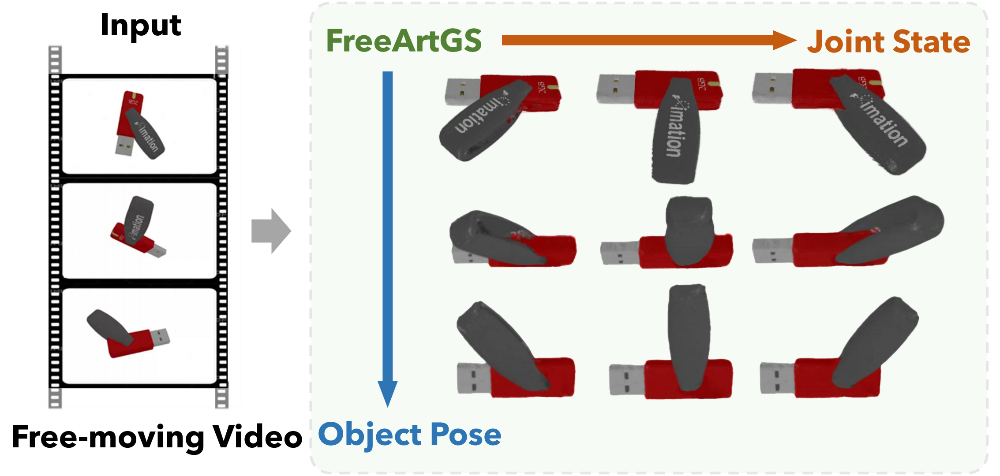
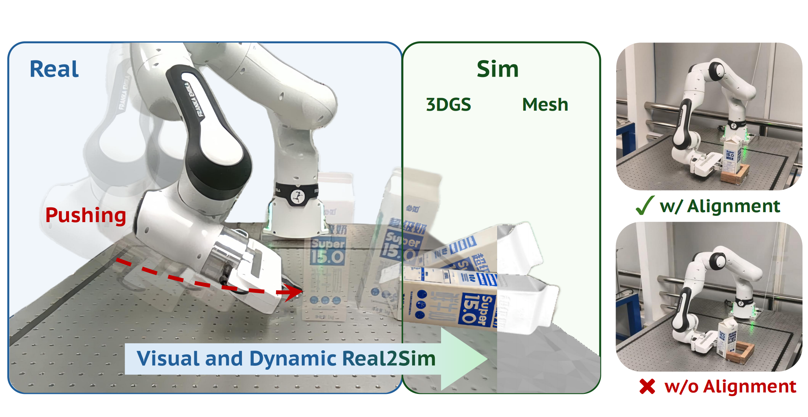

FreeArtGS: Articulated Gaussian Splatting Under Free-moving Scenario
CVPR 2026
Reconstructing articulated objects from a free-moving monocular RGB-D video through part segmentation, joint estimation, and Gaussian splatting.
I am an undergraduate student majoring in Information and Computing Science at Peking University, with expected graduation in June 2027.
My research focuses on embodied AI and 3D computer vision, with interests in robotics and multimodal learning. I am passionate about bridging theoretical advances with practical applications.
I strive to balance rigorous academic coursework, engaging research projects, and meaningful social work. Always eager to learn and collaborate, I welcome discussions on innovative technologies and interdisciplinary initiatives.

CVPR 2026
Reconstructing articulated objects from a free-moving monocular RGB-D video through part segmentation, joint estimation, and Gaussian splatting.

arXiv 2025
Bridging visual and dynamic real-to-sim gaps to enable physics-aware simulation and zero-shot transfer for robotic manipulation.
* Equal contribution.
B.S. in Information and Computing Science
Expected graduation: June 2027 · GPA: 3.722/4.0
Relevant coursework: Machine Learning, Computer Vision, Data Structures.
Working on 3D/4D reconstruction.
Supervised by Prof. Hao Dong. Working on bridging the sim-to-real gap, 3D asset reconstruction, and data generation.
Reviewer: IEEE Robotics and Automation Letters (RA-L)
Feel free to get in touch about research, collaboration, or shared interests.